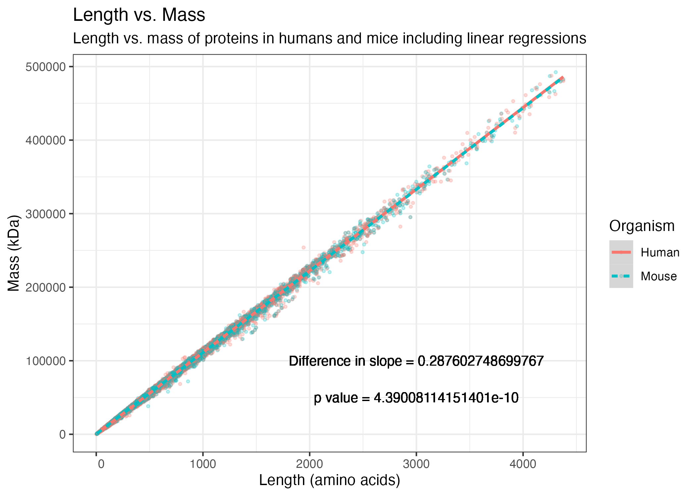
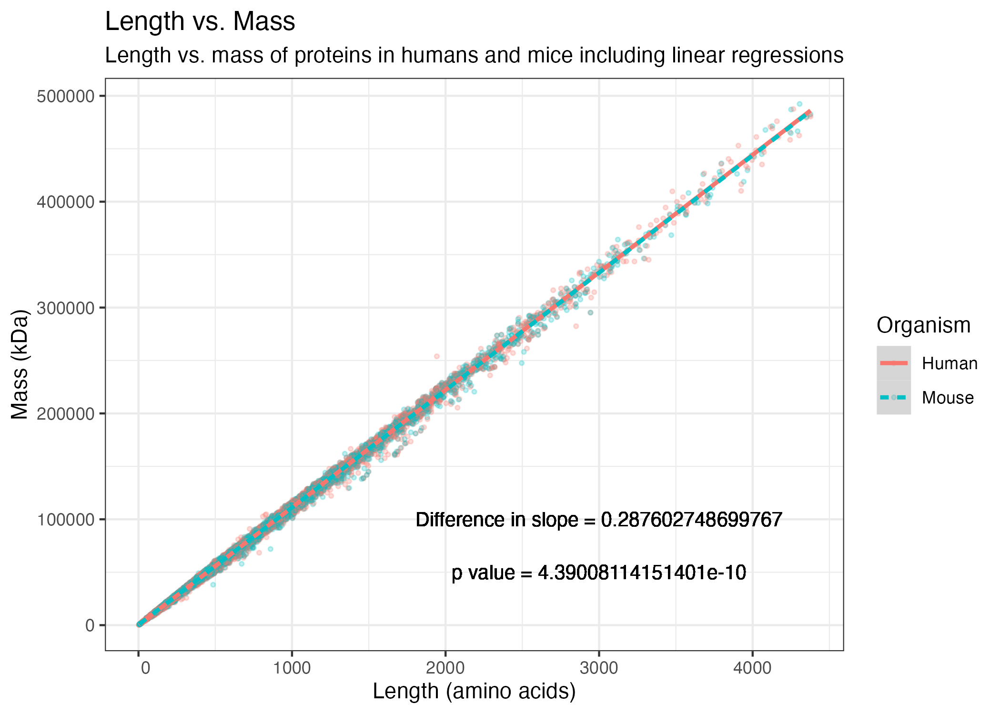
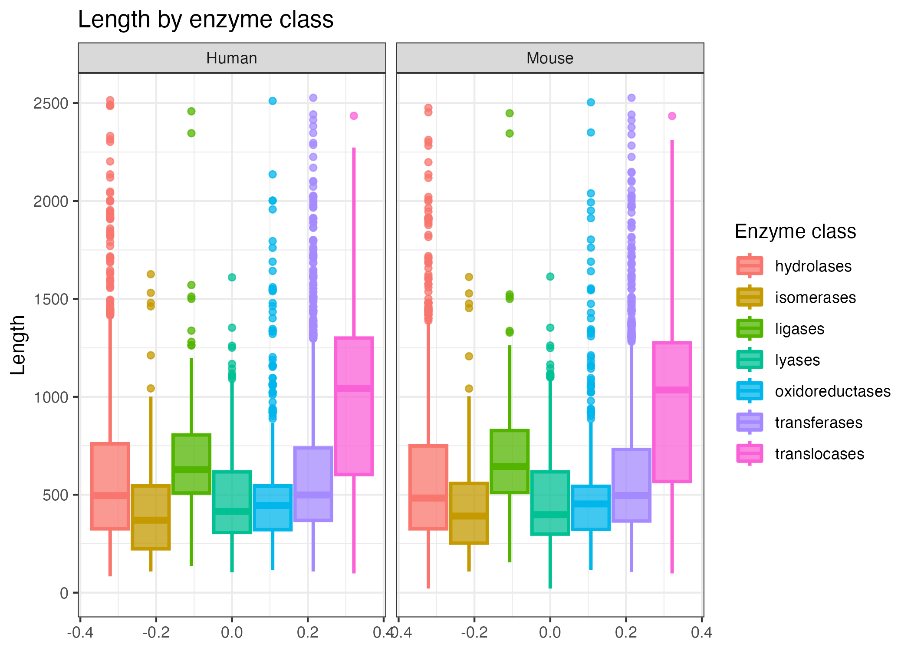
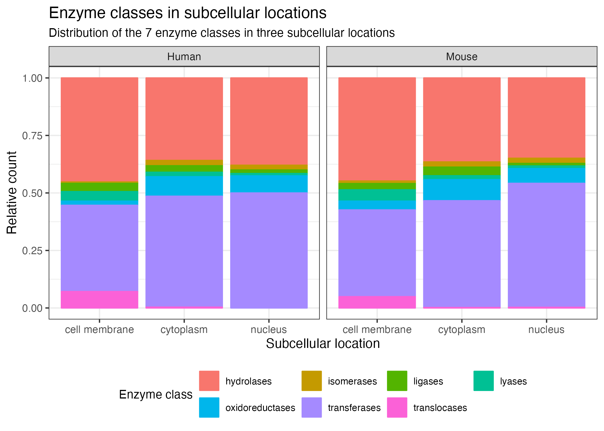

| Entry | Gene Names | Organism | Function [CC] | Protein names | Gene Ontology (molecular function) | Subcellular location [CC] | Reviewed | Entry Name | Pathway | Cofactor | pH dependence | Temperature dependence | EC number | Protein families | Intramembrane | Transmembrane | Catalytic activity |
|---|---|---|---|---|---|---|---|---|---|---|---|---|---|---|---|---|---|
| Q8N1S5 | SLC39A11 C17orf26 ZIP11 | Homo sapiens (Human) | FUNCTION: Zinc importer that regulates cytosolic zinc concentrations either via zinc influx from the extracellular compartment or efflux from intracellular organelles such as Golgi apparatus. May transport copper ions as well. The transport mechanism remains to be elucidated. {ECO:0000250|UniProtKB:Q8BWY7}. | Zinc transporter ZIP11 (Solute carrier family 39 member 11) (Zrt- and Irt-like protein 11) (ZIP-11) | copper ion transmembrane transporter activity [GO:0005375]; zinc ion transmembrane transporter activity [GO:0005385] | SUBCELLULAR LOCATION: Cell membrane {ECO:0000250|UniProtKB:Q8BWY7}; Multi-pass membrane protein {ECO:0000250|UniProtKB:Q8BWY7}. Nucleus {ECO:0000250|UniProtKB:Q8BWY7}. Cytoplasm {ECO:0000250|UniProtKB:Q8BWY7}. Golgi apparatus {ECO:0000250|UniProtKB:Q8BWY7}. | reviewed | S39AB_HUMAN | NA | NA | NA | NA | NA | ZIP transporter (TC 2.A.5) family | NA | TRANSMEM 12..32; /note=“Helical”; /evidence=“ECO:0000255”; TRANSMEM 44..64; /note=“Helical”; /evidence=“ECO:0000255”; TRANSMEM 72..92; /note=“Helical”; /evidence=“ECO:0000255”; TRANSMEM 194..214; /note=“Helical”; /evidence=“ECO:0000255”; TRANSMEM 263..285; /note=“Helical”; /evidence=“ECO:0000255”; TRANSMEM 290..307; /note=“Helical”; /evidence=“ECO:0000255”; TRANSMEM 322..342; /note=“Helical”; /evidence=“ECO:0000255” | CATALYTIC ACTIVITY: Reaction=Zn(2+)(in) = Zn(2+)(out); Xref=Rhea:RHEA:29351, ChEBI:CHEBI:29105; Evidence={ECO:0000250|UniProtKB:Q8BWY7}; PhysiologicalDirection=right-to-left; Xref=Rhea:RHEA:29353; Evidence={ECO:0000250|UniProtKB:Q8BWY7}; CATALYTIC ACTIVITY: Reaction=Cu(2+)(in) = Cu(2+)(out); Xref=Rhea:RHEA:28703, ChEBI:CHEBI:29036; Evidence={ECO:0000250|UniProtKB:Q8BWY7}; PhysiologicalDirection=right-to-left; Xref=Rhea:RHEA:28705; Evidence={ECO:0000250|UniProtKB:Q8BWY7}; |
| Q13469 | NFATC2 NFAT1 NFATP | Homo sapiens (Human) | FUNCTION: Plays a role in the inducible expression of cytokine genes in T-cells, especially in the induction of the IL-2, IL-3, IL-4, TNF-alpha or GM-CSF (PubMed:15790681). Promotes invasive migration through the activation of GPC6 expression and WNT5A signaling pathway (PubMed:21871017). Is involved in the negative regulation of chondrogenesis (PubMed:35789258). {ECO:0000269|PubMed:15790681, ECO:0000269|PubMed:21871017, ECO:0000269|PubMed:35789258}. | Nuclear factor of activated T-cells, cytoplasmic 2 (NF-ATc2) (NFATc2) (NFAT pre-existing subunit) (NF-ATp) (T-cell transcription factor NFAT1) | 14-3-3 protein binding [GO:0071889]; chromatin binding [GO:0003682]; DNA binding [GO:0003677]; DNA-binding transcription activator activity, RNA polymerase II-specific [GO:0001228]; DNA-binding transcription factor activity [GO:0003700]; DNA-binding transcription factor activity, RNA polymerase II-specific [GO:0000981]; DNA-binding transcription repressor activity, RNA polymerase II-specific [GO:0001227]; molecular adaptor activity [GO:0060090]; phosphatase binding [GO:0019902]; RNA polymerase II cis-regulatory region sequence-specific DNA binding [GO:0000978]; sequence-specific double-stranded DNA binding [GO:1990837] | SUBCELLULAR LOCATION: Cytoplasm. Nucleus. Note=Cytoplasmic for the phosphorylated form and nuclear after activation that is controlled by calcineurin-mediated dephosphorylation. Rapid nuclear exit of NFATC is thought to be one mechanism by which cells distinguish between sustained and transient calcium signals. The subcellular localization of NFATC plays a key role in the regulation of gene transcription. | reviewed | NFAC2_HUMAN | NA | NA | NA | NA | NA | NA | NA | NA | NA |
| Q8VDX6 | Rxylt1 Tmem5 | Mus musculus (Mouse) | FUNCTION: Acts as a UDP-D-xylose:ribitol-5-phosphate beta1,4-xylosyltransferase, which catalyzes the transfer of UDP-D-xylose to ribitol 5-phosphate (Rbo5P) to form the Xylbeta1-4Rbo5P linkage on O-mannosyl glycan. Participates in the biosynthesis of the phosphorylated O-mannosyl trisaccharide (N-acetylgalactosamine-beta-3-N-acetylglucosamine-beta-4-(phosphate-6-)mannose), a carbohydrate structure present in alpha-dystroglycan (DAG1), which is required for binding laminin G-like domain-containing extracellular proteins with high affinity. {ECO:0000250|UniProtKB:Q9Y2B1}. | Ribitol-5-phosphate xylosyltransferase 1 (EC 2.4.2.61) (Transmembrane protein 5) (UDP-D-xylose:ribitol-5-phosphate beta1,4-xylosyltransferase) | ribitol beta-1,4-xylosyltransferase activity [GO:0120053] | SUBCELLULAR LOCATION: Golgi apparatus membrane {ECO:0000250|UniProtKB:Q9Y2B1}; Single-pass type II membrane protein {ECO:0000250|UniProtKB:Q9Y2B1}. | reviewed | RXLT1_MOUSE | PATHWAY: Protein modification; protein glycosylation. {ECO:0000250|UniProtKB:Q9Y2B1}. | NA | NA | NA | 2.4.2.61 | RXYLT1 family | NA | TRANSMEM 10..30; /note=“Helical; Signal-anchor for type II membrane protein”; /evidence=“ECO:0000255” | CATALYTIC ACTIVITY: Reaction=3-O-[Rib-ol-P-Rib-ol-P-3-beta-D-GalNAc-(1->3)-beta-D-GlcNAc-(1->4)-(O-6-P-alpha-D-Man)]-Thr-[protein] + UDP-alpha-D-xylose = 3-O-[beta-D-Xyl-(1->4)-Rib-ol-P-Rib-ol-P-3-beta-D-GalNAc-(1->3)-beta-D-GlcNAc-(1->4)-(O-6-P-alpha-D-Man)]-Thr-[protein] + H(+) + UDP; Xref=Rhea:RHEA:57880, Rhea:RHEA-COMP:15021, Rhea:RHEA-COMP:15023, ChEBI:CHEBI:15378, ChEBI:CHEBI:57632, ChEBI:CHEBI:58223, ChEBI:CHEBI:142403, ChEBI:CHEBI:142405; EC=2.4.2.61; Evidence={ECO:0000250|UniProtKB:Q9Y2B1}; PhysiologicalDirection=left-to-right; Xref=Rhea:RHEA:57881; Evidence={ECO:0000250|UniProtKB:Q9Y2B1}; |
| Q14B98 | Pheta2 Fam109b | Mus musculus (Mouse) | FUNCTION: Plays a role in endocytic trafficking. Required for receptor recycling from endosomes, both to the trans-Golgi network and the plasma membrane. {ECO:0000250|UniProtKB:Q6ICB4}. | Sesquipedalian-2 (Ses2) (27 kDa inositol polyphosphate phosphatase interacting protein B) (IPIP27B) (PH domain-containing endocytic trafficking adaptor 2) | protein homodimerization activity [GO:0042803] | SUBCELLULAR LOCATION: Early endosome {ECO:0000250|UniProtKB:Q6ICB4}. Recycling endosome {ECO:0000250|UniProtKB:Q6ICB4}. Golgi apparatus, trans-Golgi network {ECO:0000250|UniProtKB:Q6ICB4}. Cytoplasmic vesicle, clathrin-coated vesicle {ECO:0000250|UniProtKB:Q6ICB4}. Note=Also found on macropinosomes. Not detected in late endosomes, nor in lysosomes. {ECO:0000250|UniProtKB:Q6ICB4}. | reviewed | SESQ2_MOUSE | NA | NA | NA | NA | NA | Sesquipedalian family | NA | NA | NA |
| P35269 | GTF2F1 RAP74 | Homo sapiens (Human) | FUNCTION: TFIIF is a general transcription initiation factor that binds to RNA polymerase II and helps to recruit it to the initiation complex in collaboration with TFIIB. It promotes transcription elongation. {ECO:0000269|PubMed:10428810}. | General transcription factor IIF subunit 1 (General transcription factor IIF 74 kDa subunit) (Transcription initiation factor IIF subunit alpha) (TFIIF-alpha) (Transcription initiation factor RAP74) | DNA binding [GO:0003677]; phosphatase activator activity [GO:0019211]; promoter-specific chromatin binding [GO:1990841]; protein domain specific binding [GO:0019904]; protein phosphatase binding [GO:0019903]; RNA binding [GO:0003723]; RNA polymerase II general transcription initiation factor activity [GO:0016251]; RNA polymerase II general transcription initiation factor binding [GO:0001091]; TFIIF-class transcription factor complex binding [GO:0001096] | SUBCELLULAR LOCATION: Nucleus. | reviewed | T2FA_HUMAN | NA | NA | NA | NA | NA | TFIIF alpha subunit family | NA | NA | NA |
| Q14953 | KIR2DS5 CD158G NKAT9 | Homo sapiens (Human) | FUNCTION: Activating natural killer (NK) receptor that recognizes C2 epitopes of HLA-C alleles. Bridging the innate and adaptive immune systems, NK cells express a number of cell surface receptors which either inhibit or stimulate their cytotoxicity (PubMed:28685972, PubMed:18624290, PubMed:18682925). Able to activate NK cells citotoxicity and cytokine production such as IFNG (PubMed:18624290, PubMed:24269691). Receptor functions are attenuated even lost in some alleles, such as KIR2DS5*002 represented in this entry (PubMed:28685972). {ECO:0000269|PubMed:18624290, ECO:0000269|PubMed:18682925, ECO:0000269|PubMed:24269691, ECO:0000269|PubMed:28685972}. | Killer cell immunoglobulin-like receptor 2DS5 (CD158 antigen-like family member G) (Natural killer-associated transcript 9) (NKAT-9) (CD antigen CD158g) | HLA-C specific inhibitory MHC class I receptor activity [GO:0030110] | SUBCELLULAR LOCATION: Cell membrane {ECO:0000269|PubMed:18624290, ECO:0000269|PubMed:18682925, ECO:0000269|PubMed:24269691}; Single-pass type I membrane protein {ECO:0000305}; Extracellular side {ECO:0000269|PubMed:18682925, ECO:0000269|PubMed:24269691}. | reviewed | KI2S5_HUMAN | NA | NA | NA | NA | NA | Immunoglobulin superfamily | NA | TRANSMEM 246..264; /note=“Helical”; /evidence=“ECO:0000255” | NA |
| P61807 | Snn | Mus musculus (Mouse) | FUNCTION: Plays a role in the toxic effects of organotins (By similarity). Plays a role in endosomal maturation (PubMed:27015288). {ECO:0000250|UniProtKB:O75324, ECO:0000269|PubMed:27015288}. | Stannin | metal ion binding [GO:0046872] | SUBCELLULAR LOCATION: Mitochondrion outer membrane {ECO:0000250}; Single-pass membrane protein {ECO:0000250}. | reviewed | SNN_MOUSE | NA | NA | NA | NA | NA | Stannin family | NA | TRANSMEM 11..31; /note=“Helical”; /evidence=“ECO:0000255” | NA |
| Q10472 | GALNT1 | Homo sapiens (Human) | FUNCTION: Catalyzes the initial reaction in O-linked oligosaccharide biosynthesis, the transfer of an N-acetyl-D-galactosamine residue to a serine or threonine residue on the protein receptor (PubMed:8690719, PubMed:9295285). Has a broad spectrum of substrates such as apomucin-, MUC5AC-, MUC1- and MUC2-derived peptides (PubMed:9295285). {ECO:0000269|PubMed:8690719, ECO:0000269|PubMed:9295285}. | Polypeptide N-acetylgalactosaminyltransferase 1 (EC 2.4.1.41) (Polypeptide GalNAc transferase 1) (GalNAc-T1) (pp-GaNTase 1) (Protein-UDP acetylgalactosaminyltransferase 1) (UDP-GalNAc:polypeptide N-acetylgalactosaminyltransferase 1) [Cleaved into: Polypeptide N-acetylgalactosaminyltransferase 1 soluble form] | carbohydrate binding [GO:0030246]; manganese ion binding [GO:0030145]; polypeptide N-acetylgalactosaminyltransferase activity [GO:0004653] | SUBCELLULAR LOCATION: [Polypeptide N-acetylgalactosaminyltransferase 1]: Golgi apparatus, Golgi stack membrane; Single-pass type II membrane protein.; SUBCELLULAR LOCATION: [Polypeptide N-acetylgalactosaminyltransferase 1 soluble form]: Secreted. | reviewed | GALT1_HUMAN | PATHWAY: Protein modification; protein glycosylation. {ECO:0000269|PubMed:8690719, ECO:0000269|PubMed:9295285}. | COFACTOR: Name=Mn(2+); Xref=ChEBI:CHEBI:29035; Evidence={ECO:0000250|UniProtKB:O08912}; | NA | NA | 2.4.1.41 | Glycosyltransferase 2 family, GalNAc-T subfamily | NA | TRANSMEM 9..28; /note=“Helical; Signal-anchor for type II membrane protein”; /evidence=“ECO:0000255” | CATALYTIC ACTIVITY: Reaction=L-seryl-[protein] + UDP-N-acetyl-alpha-D-galactosamine = 3-O-[N-acetyl-alpha-D-galactosaminyl]-L-seryl-[protein] + H(+) + UDP; Xref=Rhea:RHEA:23956, Rhea:RHEA-COMP:9863, Rhea:RHEA-COMP:12788, ChEBI:CHEBI:15378, ChEBI:CHEBI:29999, ChEBI:CHEBI:53604, ChEBI:CHEBI:58223, ChEBI:CHEBI:67138; EC=2.4.1.41; Evidence={ECO:0000269|PubMed:8690719, ECO:0000269|PubMed:9295285}; PhysiologicalDirection=left-to-right; Xref=Rhea:RHEA:23957; Evidence={ECO:0000305|PubMed:8690719, ECO:0000305|PubMed:9295285}; CATALYTIC ACTIVITY: Reaction=L-threonyl-[protein] + UDP-N-acetyl-alpha-D-galactosamine = 3-O-[N-acetyl-alpha-D-galactosaminyl]-L-threonyl-[protein] + H(+) + UDP; Xref=Rhea:RHEA:52424, Rhea:RHEA-COMP:11060, Rhea:RHEA-COMP:11689, ChEBI:CHEBI:15378, ChEBI:CHEBI:30013, ChEBI:CHEBI:58223, ChEBI:CHEBI:67138, ChEBI:CHEBI:87075; EC=2.4.1.41; Evidence={ECO:0000269|PubMed:8690719, ECO:0000269|PubMed:9295285}; PhysiologicalDirection=left-to-right; Xref=Rhea:RHEA:52425; Evidence={ECO:0000305|PubMed:8690719, ECO:0000305|PubMed:9295285}; |
| Q9HAD4 | WDR41 MSTP048 | Homo sapiens (Human) | FUNCTION: Non-catalytic component of the C9orf72-SMCR8 complex, a complex that has guanine nucleotide exchange factor (GEF) activity and regulates autophagy (PubMed:27193190, PubMed:27103069, PubMed:27617292, PubMed:28195531). The C9orf72-SMCR8 complex promotes the exchange of GDP to GTP, converting inactive GDP-bound RAB8A and RAB39B into their active GTP-bound form, thereby promoting autophagosome maturation (PubMed:27103069). As part of the C9orf72-SMCR8 complex, stimulates RAB8A and RAB11A GTPase activity in vitro, however WDR42 is shown not be an essential complex component for this function (PubMed:32303654). The C9orf72-SMCR8 complex also acts as a negative regulator of autophagy initiation by interacting with the ULK1/ATG1 kinase complex and inhibiting its protein kinase activity (PubMed:27103069, PubMed:27617292). {ECO:0000269|PubMed:27103069, ECO:0000269|PubMed:27193190, ECO:0000269|PubMed:27617292, ECO:0000269|PubMed:28195531, ECO:0000269|PubMed:32303654}. | WD repeat-containing protein 41 | NA | SUBCELLULAR LOCATION: Cytoplasm {ECO:0000269|PubMed:27193190}. | reviewed | WDR41_HUMAN | NA | NA | NA | NA | NA | NA | NA | NA | NA |
| P42331 | ARHGAP25 KIAA0053 | Homo sapiens (Human) | FUNCTION: GTPase activator for the Rho-type GTPases by converting them to an inactive GDP-bound state. {ECO:0000250}. | Rho GTPase-activating protein 25 (Rho-type GTPase-activating protein 25) | GTPase activator activity [GO:0005096] | NA | reviewed | RHG25_HUMAN | NA | NA | NA | NA | NA | NA | NA | NA | NA |
Differences in protein location, role and more in mice and humans
Anton Wang(s183220), Line(s184242), Jeppe(s184242), Oscar(s184242) og Johan(s184242)
Introduction
Hvad vil vi undersøge? Humans vs mice
Briefly about UniProt
Materials
- Swiss-Prot data
- The entries was very untidy and had to be wrangeled a lot
- This is a example of one of the original datafiles
Materials
Swiss-Prot data of all proteins in human and mouse with to following variables/columns:
[1] "Entry" "Reviewed"
[3] "Entry Name" "Gene Names"
[5] "Pathway" "Cofactor"
[7] "Function [CC]" "pH dependence"
[9] "Temperature dependence" "EC number"
[11] "Subcellular location [CC]" "Protein families"
[13] "Organism" "Protein names"
[15] "Intramembrane" "Gene Ontology (molecular function)"
[17] "Transmembrane" "Catalytic activity" and Methods
Overview of workflow
Logoplots
Linear modelling
Results - Length and Mass
- Preliminary summary statistics of protein length and mass distributions in mice and humans clearly show their similarity as organisms.
 

Results - Length, Cofactors and Enzyme Classes


Enzyme classes in subcellular locations


Almost identical logo plots for mouse and human enzymes
| entry | organism | enzyme_class | logo_seq |
|---|---|---|---|
| O95278 | human | transferase | QGDSGGP |
| … | … | … | … |
| P27708 | human | hydrolase | STYEKHL |
| Q2L4Q9 | human | lyase | AIVDKRV |
Table: Organism == human & enzyme_class != NA
| entry | organism | enzymeclass | logo_seq |
|---|---|---|---|
| Q8K0D2 | mouse | isomerase | QGDSGGP |
| … | … | … | … |
| Q91ZA3 | mouse | hydrolase | STYEKHL |
| Q9EQW8 | mouse | transferase | AIVDKRV |
Table: Organism == mouse & enzyme_class != NA

Discussion
Human and mice are very similar.
The process